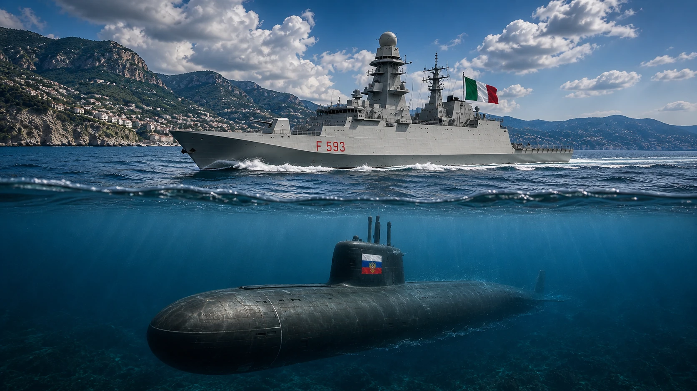

VANNACCI: UN ALTRO BUGIARDO?
Il programma di Futuro Nazionale alla prova dei fatti.
Leggi l’indagine →
Il programma di Futuro Nazionale alla prova dei fatti.
Leggi l’indagine →
Dublino, AMMR, voto del 2024, Albania e ripartenza dei trasferimenti nel 2026.
Leggi l’indagine →
Oltre 220 azioni legali, politica, Rai, audience e potere mediatico.
Leggi l’indagine →
Oggi lo scenario è più caldo di quanto pensiate.
Leggi l’indagine →.JPG?width=1200)
Quando un cartone animato diventa una questione di sicurezza nazionale.
Leggi l’indagine →
Stati Uniti, Iran, Ucraina e petroliere commerciali sulla stessa bilancia.
Leggi l’indagine →
Costi pubblici, ArcelorMittal, sindacati, cordata italiana e decarbonizzazione di Taranto.
Leggi l’indagine →
Costi della macchina, alloggi fuori contratto, manutenzione e confronto europeo.
Leggi l’indagine →
Dalla previsione ufficiale ai crediti maturati: dati, governi e conti pubblici.
Leggi l’indagine →Da compagnia a baby gang: Milano come laboratorio di una trasformazione lunga quarant’anni.
Leggi l’indagine →
Oxana Malaya, Marcos Rodríguez Pantoja, adattamento, appartenenza e potere narrativo.
Leggi l’indagine →
Borseggi, querela, riforma Cartabia, minori, gravidanza e misure cautelari.
Leggi l’indagine →